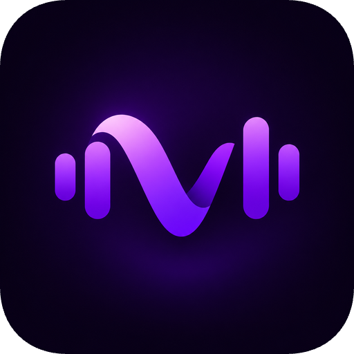

Windows
Download and run the .exe setup file. If SmartScreen appears, choose More info, then Run anyway.

Veloly GitHubTHE VELOLY GUIDE
Everything you need to install Veloly, bring in your music and make the player feel like yours.
01 · INSTALLATION
Download the package for your device from the latest GitHub release.
Download and run the .exe setup file. If SmartScreen appears, choose More info, then Run anyway.
Open the .dmg and move Veloly to Applications. If macOS blocks the unsigned app, control-click it and choose Open.
Download the .apk and open it. Android may ask you to allow app installs from your browser or file manager. To update, install the new APK over the existing app.
Veloly is installed with SideStore using your Apple Account; it is not distributed through the App Store. The first setup needs a computer.
There is no ready-made Linux package at the moment. You can build Veloly from its public source code.
Windows and macOS can install signed desktop updates from inside Veloly. On Android, the update opens the APK installer and needs your confirmation. On iPhone and iPad, updates are handled by SideStore.
02 · YOUR LIBRARY
Open Library, then add music from your device. Veloly reads track information and cover art from supported audio files.
Choose Add a folder and select the folder containing your music. Veloly scans it and remembers the location.
Tap Add audio files and select music in the system file picker. Veloly keeps a private copy inside its app storage so the tracks remain available in the library.
Use Rescan after changing desktop folders. Removing a folder from Veloly only removes it from the library; it does not delete the original files.
MP3 · FLAC · OGG · M4A · AAC · WAV · AIFF · CAF · MKA · WEBM
Audio files selected on mobile are stored in that device's Veloly app storage. They do not automatically transfer with a playlist backup; copy your original music files to the other device and add them there.
03 · DISCOVER
Use the search field to look for songs, artists and albums. Discover also has mixes and recommendations.
Veloly uses music services to find metadata and playable audio. Search results may depend on regional availability and the selected recording.
Choose a local track from your library to play it directly from the device. Local files can be mixed into playlists with online tracks.
Open a track's ⋯ menu to play it next, add it to the queue, like it or add it to a playlist. On a computer, right-clicking a track opens the same menu.
04 · COLLECTION
Create a playlist from your library, then use a track's ⋯ menu to add songs. The same song can appear more than once. In a playlist, use the sort controls to arrange by title, album or duration.
Open the queue from the player. Tracks added with Play next appear before the upcoming list. Use the drag handle to reorder items; on touchscreens, press and drag the handle.
In Settings → Library → Import playlist, paste a supported Spotify, Deezer, YouTube Music or Veloly playlist link. Imported songs are matched to tracks Veloly can play; some tracks may not be found.
Open the playlist and choose Share to create a link. The link contains its track list; local audio and file paths are not shared. Another person can paste the link into the playlist importer.
Use Settings → Library → Collection backup to export or restore liked songs, playlists and listening history. A backup file does not contain the audio itself.
05 · FOLLOW ALONG
Open the lyrics view from the player. When timed lyrics are available, the words light up as the song plays. Tap a line to seek to that part of the track.
Use the lyrics sync controls to move the displayed lyrics earlier or later. Veloly remembers the adjustment for that track.
Lyrics depend on external providers and may not be available for every recording or spelling. Try the retry button when the request failed, or check again later.
06 · MAKE IT YOURS
07 · WITHOUT A CONNECTION
Offline playback is for audio files stored in your Veloly library. Music streamed from online services needs a connection and is not saved as an offline download.
Tap Need help to do it? in the library for the in-app guide. Veloly copies the selected audio into its private storage; make sure your device has enough free space.
08 · YOUR DATA
Your settings, liked songs, playlists and listening history are kept locally on your device. Use Collection backup in Settings → Library to move that collection to another device.
Search, streaming, lyrics, release checks and playlist links use the relevant online services. A shared playlist sends its title and track details to Veloly’s link service; local files and their paths are excluded.
If the anonymous first-launch counter is available, it is off by default. Turning it on sends a random installation ID once. Turning it off asks the service to remove that count.
When feedback is available in Settings, only the message you submit, its category, app version and a random cooldown ID are sent to the Veloly team.
09 · FIXES
On desktop, check that the folder still exists and press Rescan. On mobile, check that the audio files were imported into Veloly again if you reinstalled the app; app-private files may not survive an uninstall.
Make sure it is a supported audio format and that Veloly finished scanning it. Try selecting the file again from the system file picker.
Desktop YouTube playback requires yt-dlp to be installed locally. Veloly does not download or update it automatically. Restart the app after installing it.
On Android, confirm the system installer prompt and allow installs from the app that opened the APK. On iPhone and iPad, open SideStore and refresh or install the Veloly source.
Restart Veloly and check Settings. If the problem remains, report it through the feedback option in Settings or open an issue on GitHub.